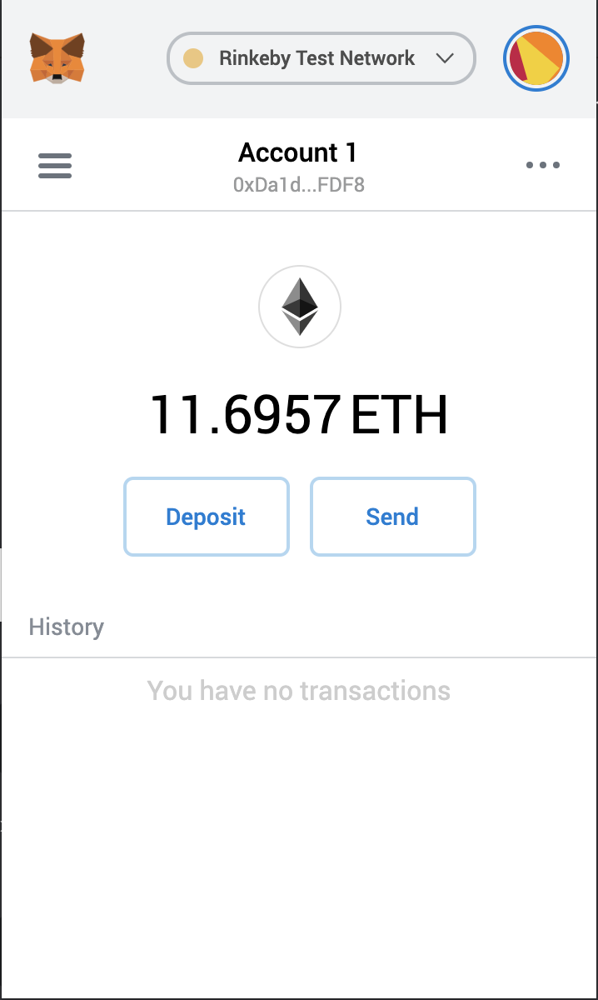

ERC20 Standard https://eips.ethereum.org/EIPS/eip-20
- Standard for transferring tokens and approving tokens to be spent by another on-chain contract-development
Approve Attack vector
- If an account changes approval from 5 to 3, due to front running, the attacker can transfer 8 tokens
- Work around is to change approval from 5 to 0 first. If no attack, change to 2 later. Otherwise, leave approval at 0.
- The worse case in this approach is lose 5 tokens
- Openzeppelin uses decrease/increase as solution
Metamask

- Ethereum Wallet plugin for chrome
- A wallet allows you to manage your crypto assets and interact with smart contracts
Create/Import Account
- Create Account
- Import Account
- Private Key
- JSON wallet file
What is a JSON Wallet File?
- It includes the encrypted private key, with information about how it was encrypted
- You can use https://ethers.io/ to generate the wallet file
Testnet
- Testnet is a blockchain network for testing purposes
- The following article has a good description of each testnet:
Faucets
- Faucets give testnet ether, to be used for testing
- Ropsten - https://faucet.ropsten.be/
- Rinkeby - https://faucet.rinkeby.io/
- Kovan - https://faucet.kovan.network/
- Goerli - https://goerli-faucet.slock.it/
- All - https://faucets.blockxlabs.com
Blockchain Explorer
- Blockchain Explorer is used to lookup a blockchain for information about account, transaction, block, ens name, etc.
Etherscan
- Is a blockchain explorer
- Mainnet : https://etherscan.io/
Verify Contract
- After a contract is verified on etherscan, the source code is available and you can read or write to the contract on etherscan
- Demo for verifying a contract
Lab
- Create an ERC20 token contract
- Deploy to a testnet
- Verify the contract on etherscan
- Manually perform tests on the contract, make sure there are approve, transfer, transferFrom transactions
- Submit the etherscan link with the contract address to blackboard
Details of token

What did we observe?

Sample Use case for approve and transferFrom
- A contract that will accept WETH tokens and issue another tokens
- Demonstrate the use of ERC20 standard approve and transferFrom use case
Demo of TokenSale
- Use account 1 to deploy token contract
- Use account 1 to mint token
- Use account 2 to deploy the TokenSale contract using account 1 as the wallet. TokenSale.sol
- Use account 1 to approve tokenSale to transfer tokens
- Use account 3 to purchase WETH token
- Use account 3 to approve tokenSale contract to spend WETH
- Use account 3 to call
tokenSale.claimToken()